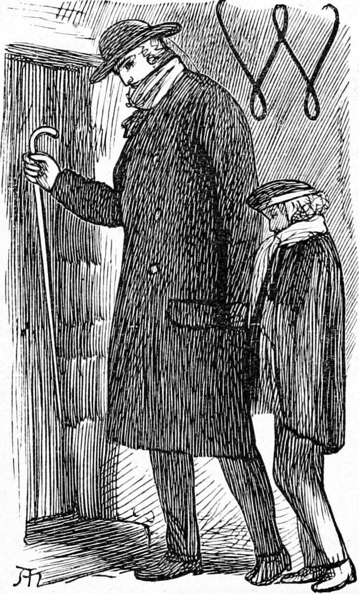
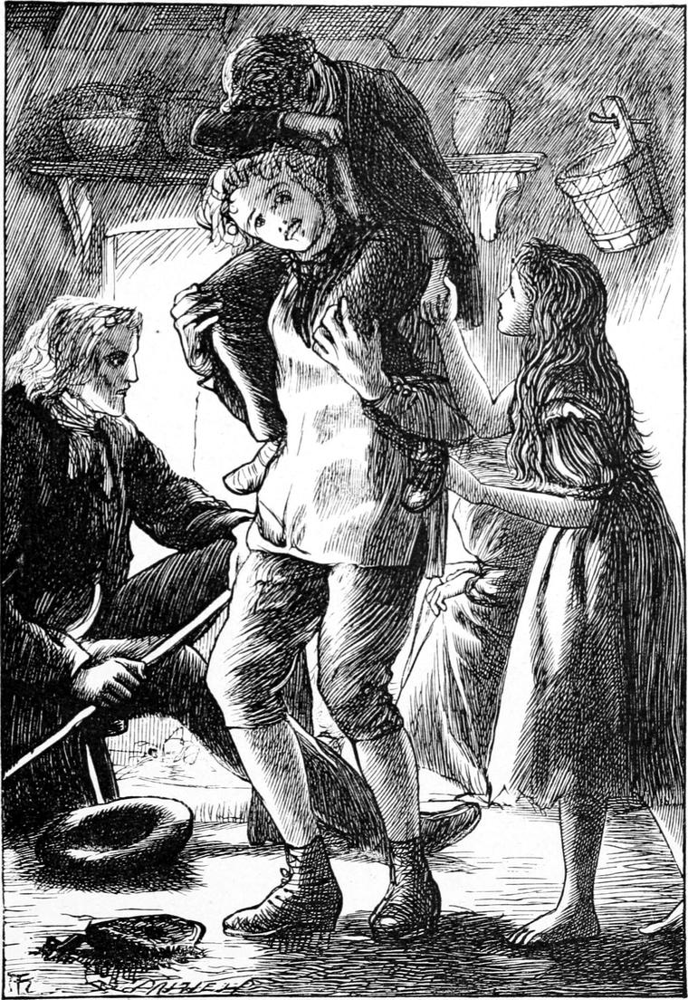

When we entered, there sat the old woman on the farther side of the hearth, rocking herself to and fro. I hardly dared look up. Elsie’s face was composed and sweet. She gave me a shy tremulous smile, which went to my heart and humbled me dreadfully. My father took the stool on which Elsie had been sitting. When he had lowered himself upon it, his face was nearly on a level with that of the old woman, who took no notice of him, but kept rocking herself to and fro and moaning. He laid his hand on hers, which, old and withered and not very clean, lay on her knee.
“How do you find yourself to-night, Mrs. Gregson?” he asked.
“I’m an ill-used woman,” she replied with a groan, behaving as if it was my father who had maltreated her, and whose duty it was to make an apology for it.
“I am aware of what you mean, Mrs. Gregson. That is what brought me to inquire after you. I hope you are not seriously the worse for it.”
“I’m an ill-used woman,” she repeated. “Every man’s hand’s against me.”
“Well, I hardly think that,” said my father in a cheerful tone. “My hand’s not against you now.”
“If you bring up your sons, Mr. Bannerman, to mock at the poor, and find their amusement in driving the aged and infirm to death’s door, you can’t say your hand’s not against a poor lone woman like me.”
“But I don’t bring up my sons to do so. If I did I shouldn’t be here now. I am willing to bear my part of the blame, Mrs. Gregson, but to say I bring my sons up to that kind of wickedness, is to lay on me more than my share, a good deal.—Come here, Ranald.”
I obeyed with bowed head and shame-stricken heart, for I saw what wrong I had done my father, and that although few would be so unjust to him as this old woman, many would yet blame the best man in the world for the wrongs of his children. When I stood by my father’s side, the old woman just lifted her head once to cast on me a scowling look, and then went on again rocking herself.
“Now, my boy,” said my father, “tell Mrs. Gregson why you have come here to-night.”
I had to use a dreadful effort to make myself speak. It was like resisting a dumb spirit and forcing the words from my lips. But I did not hesitate a moment. In fact, I dared not hesitate, for I felt that hesitation would be defeat.
“I came, papa——” I began.
“No no, my man,” said my father; “you must speak to Mrs. Gregson, not to me.”
Thereupon I had to make a fresh effort. When at this day I see a child who will not say the words required of him, I feel again just as I felt then, and think how difficult it is for him to do what he is told; but oh, how I wish he would do it, that he might be a conqueror I for I know that if he will not make the effort, it will grow more and more difficult for him to make any effort. I cannot be too thankful that I was able to overcome now.
“I came, Mrs. Gregson,” I faltered, “to tell you that I am very sorry I behaved so ill to you.”
“Yes, indeed,” she returned. “How would you like anyone to come and serve you so in your grand house? But a poor lone widow woman like me is nothing to be thought of. Oh no! not at all.”
“I am ashamed of myself,” I said, almost forcing my confession upon her.
“So you ought to be all the days of your life. You deserve to be drummed out of the town for a minister’s son that you are! Hoo!”
“I’ll never do it again, Mrs. Gregson.”
“You’d better not, or you shall hear of it, if there’s a sheriff in the county. To insult honest people after that fashion!”
I drew back, more than ever conscious of the wrong I had done in rousing such unforgiving fierceness in the heart of a woman. My father spoke now.
“Shall I tell you, Mrs. Gregson, what made the boy sorry, and made him willing to come and tell you all about it?”
“Oh, I’ve got friends after all. The young prodigal!”
“You are coming pretty near it, Mrs. Gregson,” said my father; “but you haven’t touched it quite. It was a friend of yours that spoke to my boy and made him very unhappy about what he had done, telling him over and over again what a shame it was, and how wicked of him. Do you know what friend it was?”
“Perhaps I do, and perhaps I don’t. I can guess.”
“I fear you don’t guess quite correctly. It was the best friend you ever had or ever will have. It was God himself talking in my poor boy’s heart. He would not heed what he said all day, but in the evening we were reading how the prodigal son went back to his father, and how the father forgave him; and he couldn’t stand it any longer, and came and told me all about it.”
“It wasn’t you he had to go to. It wasn’t you he smoked to death—was it now? It was easy enough to go to you.”
“Not so easy perhaps. But he has come to you now.”
“Come when you made him!”
“I didn’t make him. He came gladly. He saw it was all he could do to make up for the wrong he had done.”
“A poor amends!” I heard her grumble; but my father took no notice.
“And you know, Mrs. Gregson,” he went on, “when the prodigal son did go back to his father, his father forgave him at once.”
“Easy enough! He was his father, and fathers always side with their sons.”
I saw my father thinking for a moment.
“Yes; that is true,” he said. “And what he does himself, he always wants his sons and daughters to do. So he tells us that if we don’t forgive one another, he will not forgive us. And as we all want to be forgiven, we had better mind what we’re told. If you don’t forgive this boy, who has done you a great wrong, but is sorry for it, God will not forgive you—and that’s a serious affair.”
“He’s never begged my pardon yet,” said the old woman, whose dignity required the utter humiliation of the offender.
“I beg your pardon, Mrs. Gregson,” I said. “I shall never be rude to you again.”
“Very well,” she answered, a little mollified at last.
“Keep your promise, and we’ll say no more about it. It’s for your father’s sake, mind, that I forgive you.”
I saw a smile trembling about my father’s lips, but he suppressed it, saying,
“Won’t you shake hands with him, Mrs. Gregson?”
She held out a poor shrivelled hand, which I took very gladly; but it felt so strange in mine that I was frightened at it: it was like something half dead. But at the same moment, from behind me another hand, a rough little hand, but warm and firm and all alive, slipped into my left hand. I knew it was Elsie Duff’s, and the thought of how I had behaved to her rushed in upon me with a cold misery of shame. I would have knelt at her feet, but I could not speak my sorrow before witnesses. Therefore I kept hold of her hand and led her by it to the other end of the cottage, for there was a friendly gloom, the only light in the place coming from the glow—not flame—of a fire of peat and bark. She came readily, whispering before I had time to open my mouth—
I’m sorry grannie’s so hard to make it up.”
“I deserve it,” I said. “Elsie, I’m a brute. I could knock my head on the wall. Please forgive me.”
“It’s not me,” she answered. “You didn’t hurt me. I didn’t mind it.”
“Oh, Elsie! I struck you with that horrid snowball.”
“It was only on the back of my neck. It didn’t hurt me much. It only frightened me.”
“I didn’t know it was you. If I had known, I am sure I shouldn’t have done it. But it was wicked and contemptible anyhow, to any girl.”
I broke down again, half from shame, half from the happiness of having cast my sin from me by confessing it. Elsie held my hand now.
“Never mind; never mind,” she said; “you won’t do it again.”
“I would rather be hanged,” I sobbed.
That moment a pair of strong hands caught hold of mine, and the next I found myself being hoisted on somebody’s back, by a succession of heaves and pitches, which did not cease until I was firmly seated. Then a voice said—
“I’m his horse again, Elsie, and I’ll carry him home this very night.”

Elsie gave a pleased little laugh; and Turkey bore me to the fireside, where my father was talking away in a low tone to the old woman. I believe he had now turned the tables upon her, and was trying to convince her of her unkind and grumbling ways. But he did not let us hear a word of the reproof.
“Eh! Turkey, my lad! is that you? I didn’t know you were there,” he said.
I had never before heard my father address him as Turkey.
“What are you doing with that great boy upon your back?” he continued.
“I’m going to carry him home, sir.”
“Nonsense! He can walk well enough.”
Half ashamed, I began to struggle to get down, but Turkey held me tight.
“But you see, sir,” said Turkey, “we’re friends now. He’s done what he could, and I want to do what I can.”
“Very well,” returned my father, rising; “come along; it’s time we were going.”
When he bade her good night, the old woman actually rose and held out her hand to both of us.
“Good night, Grannie,” said Turkey. “Good night, Elsie.” And away we went.
Never conqueror on his triumphal entry was happier than I, as through the starry night I rode home on Turkey’s back. The very stars seemed rejoicing over my head. When I think of it now, the words always come with it, “There is joy in the presence of the angels of God over one sinner that repenteth,” and I cannot but believe they rejoiced then, for if ever I repented in my life I repented then. When at length I was down in bed beside Davie, it seemed as if there could be nobody in the world so blessed as I was: I had been forgiven. When I woke in the morning, I was as it were new born into a new world. Before getting up I had a rare game with Davie, whose shrieks of laughter at length brought Mrs. Mitchell with angry face; but I found myself kindly disposed even towards her. The weather was much the same; but its dreariness had vanished. There was a glowing spot in my heart which drove out the cold, and glorified the black frost that bound the earth. When I went out before breakfast, and saw the red face of the sun looking through the mist like a bright copper kettle, he seemed to know all about it, and to be friends with me as he had never been before; and I was quite as well satisfied as if the sun of my dream had given me a friendly nod of forgiveness.